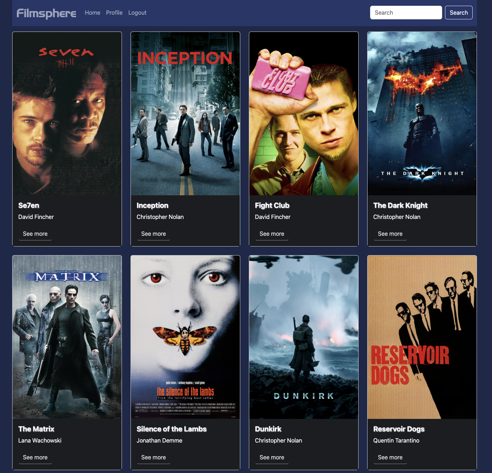

Behind the Screens: The Filmsphere Case Study
Overview
Filmsphere is a full-stack web application built using the MERN stack (MongoDB, Express, React, Node.js). It allows users to browse a curated collection of movies, sign up, log in, and manage their profiles. The app provides a seamless user experience through a responsive interface and secure data handling.
Purpose & Context
This project was developed to deepen my skills in full-stack development and create a portfolio-worthy application showcasing my technical abilities. Filmsphere demonstrates my capability to build an integrated client-server architecture, manage data securely, and design a user-friendly interface.
The main problem I wanted to address was building a movie browsing application from scratch with a strong focus on user authentication, efficient API design, and scalability.
Objective
The aim of this project was to create a professional-grade application that allowed users to interact with a movie database in a personalized way. The app needed to include features such as user registration, authentication, profile management, and the ability to curate a list of favorite movies.
Approach
Server-Side
- Designed a RESTful API using Node.js and Express with a modular approach for scalability and maintainability.
- CRUD operations for movie data, user profiles, and favorite movies stored in a MongoDB Atlas database.
- Implemented JWT for user authentication and authorization.
- Extensive testing of endpoints using Postman.
Client-Side
- Frontend developed using React to create a responsive single-page application (SPA).
- Bootstrap used for UI design, focusing on simplicity and ease of navigation.
- Features included movie browsing, user registration, login, profile management, and favorite movie curation.


Challenges & Decisions
Challenges
- Integrating JWT with the backend for secure user authentication.
- Managing asynchronous data flows between React and the backend.
- Designing a scalable and intuitive database schema.
Key Decisions
- Technology Stack: MERN stack for rapid development and smooth integration.
- Authentication: JWT for secure user access.
- Database: MongoDB Atlas for scalability and flexibility.
What I Would Do Differently
- Incorporate a recommendation engine based on user preferences.
- Use Redux or React Query for more efficient state management.
- Optimize the app for offline use with service workers (PWA standards).
Lessons Learned
This project reinforced my skills in full-stack development, particularly:
- Designing and implementing RESTful APIs.
- Building secure user authentication systems.
- Developing responsive SPAs with React.
- Managing non-relational databases and data relationships.
Project Links
Live Site: Filmsphere Live
GitHub Repository: Filmsphere Client
Test Credentials:
- Username: testuser
- Password: Filmsphere123
Curious about Filmsphere? If you'd like to learn more or discuss the project, feel free to reach out. I'd love to connect!